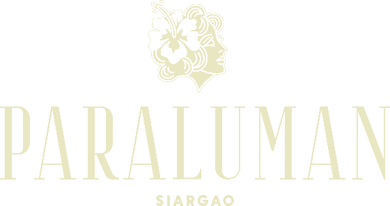
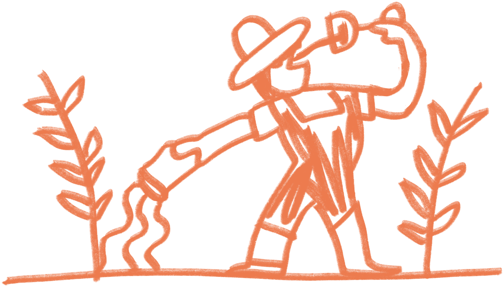
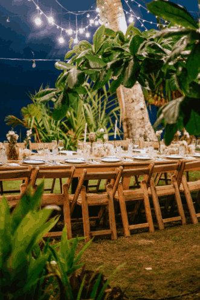
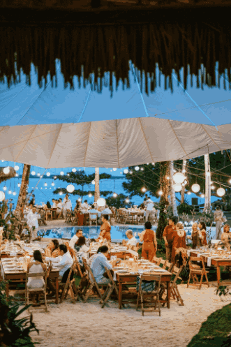

2nd edition
ani sang Siargao
26 – 31 AUGUST 2026
THE FILM · 2026
Siargao is nine municipalities of farmland, mangrove and open water, and for six days in August the whole island becomes the venue. Ani sang Siargao is not held in one place. It happens in kitchens, on a farm, in a wet market among the fishers, on a beach at sunset, in the cafés that were here long before anyone was watching.
There is no way to understand it from the outside. You have to come and eat with us.
See you on Siargao this August
WHAT IT IS
The Siargao Food & Wine Festival is the Philippines' first community-led, island-wide culinary festival. Six days, nine municipalities, and more than thirty chefs, farmers, fishers, producers and venues, run by the people who actually live and cook here. Now in its second year.
6
DAYS
9
MUNICIPALITIES
30+
MAKERS
18
GATHERINGS
ACKNOWLEDGEMENT
THE SIARGAO FOOD & WINE FESTIVAL IS HELD ON THE LAND AND WATERS OF THE PEOPLE OF SIARGAO.
We cook with what their farmers grow and their fishers bring in, and we gather in the kitchens, markets and community spaces they built and still keep. This festival celebrates those who stayed. The families who kept feeding this island through the storms, through the pandemic, through every season the visitors did not see, and who are still here doing it now.
We ask our guests to arrive with that in mind, and to leave having supported it.
OFFICIAL PARTNERS AND SPONSORS



WHY WE DO THIS
Siargao grows less of its own food every year.
Tourism grows. But not everyone grows with it.
As Siargao develops, rising costs, unequal access to resources and pressure on local food systems can leave communities behind. The challenge is ensuring tourism creates value with the island — not at its expense.
Turn tourism into a force for local resilience.
Through collaboration between hospitality, producers, chefs and communities, we create more circular food systems, supporting local sourcing, reducing waste and directing resources back into the communities that sustain Siargao.
AND IT TAKES ROOT
Local farmers know what to grow.
The week is what gets everyone in the room. Join us and be part of the solution.
See the ProgramHOSTED ACROSS THE ISLAND BY






Hiyas Farm Tropical AcademyRELIVE LAST YEAR'S BEST MOMENTS
THE MERCADO
THE WET MARKET
THE LONG TABLE
the six-day journey
Tap any gathering to see who is cooking and how to get in. Every reservation is made with the venue itself.

{{ gridCount }}
{{ day.date }}
{{ day.name }}
{{ ev.venue }} · {{ ev.time }}
{{ ev.title }}
{{ ev.title }}
The festival sells nothing. Every table is booked with the people cooking at it.
NINE MUNICIPALITIES
the whole island is the venue
Every gathering is hosted by a kitchen, farm, market or bar that was already here. The festival brings the week; they bring the room, the fire and the food.
RESERVE WITH THE HOST
OFFICIAL PARTNERS AND SPONSORS
Want to host something in 2027?
Write to usFestival media kit
In our Media Folder, you will find a curated selection of high-resolution photos available for download. Please credit ‘Siargao Food and Wine Festival’ when using photos for your coverage.
Download the media kit (PDF)PDF LINK TO BE ADDED


Covering the Festival?
Tell us what you're working on and we'll put you with the right people on the island.